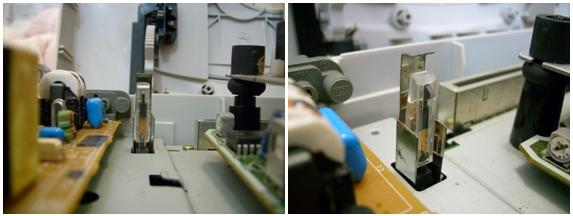
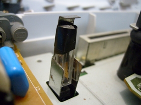

Como rodar CD-R num Saturn Travado
 :::. Por Gigacom
:::. Por Gigacom
Você
é dono de um Saturn e achou que só com chip iria rodar CD
gravado nele? Pode ficar feliz agora, a boa noticia é que
dá para rodar CD-R no Saturn, sem ter de possuir um mod chip (que é ruim pra burro de achar
(que é ruim pra burro de achar ).
Antes de contar como fazer a mágica, é preciso que
você entenda como funciona o sistema anti-pirataria do Saturn, e
saiba onde o leitor do CD estará em todo esse processo.
).
Antes de contar como fazer a mágica, é preciso que
você entenda como funciona o sistema anti-pirataria do Saturn, e
saiba onde o leitor do CD estará em todo esse processo.
Quando você coloca um CD no Saturn e o liga, logo de cara o video game procura saber que tipo de CD esta ali. Se for um jogo, então ele faz o seguinte procedimento:
1 - O leitor lê os dados iniciais do jogo no centro do CD, e em seguida vai até a extremidade do disco.
2 - Na extremidade, ele procura a faixa de segurança que é gravada em todo CD original do Saturn.
3 - Se a faixa de segurança é lida corretamente, o leitor volta pro centro do CD e inicia a execução do jogo, do contrário, o Saturn vai para a tela de boot e mostra a mensagem "Disc unsuitable for this system".
Ha
uma maneira de enganar esse sistema de segurança de uma forma
simples e eficaz, essa técnica ninja é chamada de
swap-trick, que consiste numa troca rapida de um jogo gravado em CD-R
por outro original, enquanto o leitor do Saturn caminha para fazer a
leitura do código de segurança. O swap-trick só
é possivel ser utilizado se o Saturn pensar que a tampa do drive
de CD está fechada, isso eu digo pois o Saturn não
é como o Playstation, se você abrir a tampa do CD ele vai
direto para a tela de boot sem que nada possa ser feito para impedir
isso, e como não dá para fazer a troca de CDs com a tampa
fechada, então partimos para a nossa gambiarra  .
.
Como enganar o Saturn
O drive de CD do Saturn, possui um sensor que identifica quando a tampa do drive está aberta ou fechada. Esse sensor fica na placa mãe do Saturn, e é facilmente visto logo que se abre o console.
|  |
| Eis o sensor do drive, ele fica bem perto da entrada de cartuchos do Saturn. |
Para poder abrir a tampa do console sem que esse sensor faça com que o Saturn vá para a tela de boot, é só colocar uma fita adesiva pressionando-o contra a proteção de metal atrás dele. Assim o sensor sempre indicará que a porta do drive de CD está fechada, possibilitando assim o mauseio do CD com o video game ligado.
|
 |
| Amordace esse X9 para ele não te dedurar de novo |
Usando o Swap-Trick
Agora que o sensor não vai mais atrapalhar, só resta aprender como fazer a troca dos CDs na hora certa. Siga os passos:
1 - Primeiro, coloque o jogo gravado em CD-R no Saturn e ligue-o. Você verá que o console identifica imediatamente que o CD é um jogo, e o leitor vai correndo para a extremidade do CD.
2 - Enquanto o leitor caminha do centro para a extremidade (coisa que ele faz em 1s), retire o CD-R e coloque QUALQUER jogo original rapidamente. Quando o leitor chegar na extremidade, ele irá ler o código de segurança que não existe no CD-R.
3 - Após o leitor identificar o código de segurança, ele volta para o centro do disco para dar continuidade à execução do jogo. Novamente, antes que o leitor chegue no centro, troque o CD original pelo CD-R, assim o Saturn irá rodar o CD-R numa boa enquanto não for resetado ou desligado.
Parece
fácil não? É mais ou menos... veja, naquele
primeiro modelo do Saturn, aquele que tem botões ovais, isso
é mole de se fazer, pois o leitor espera pacientemente
até que você faça a troca toda dos CDs. Já
no segundo modelo, o leitor é mais apressado, e não gosta
de esperar, mas costuma colaborar nessa opeação. Agora,
aqueles Saturns brancos e translucidos malditos, são uma nhaca
de se fazer isso .
O leitor é ultra rápido, e não tolera erros, para
fazer esse negocio dar certo o cara tem que ser muito rápido
.
O leitor é ultra rápido, e não tolera erros, para
fazer esse negocio dar certo o cara tem que ser muito rápido . Mas uma coisa é certeza, esse negocio funciona, e funciona lindamente.
. Mas uma coisa é certeza, esse negocio funciona, e funciona lindamente.
Alguns
usuários de Saturn fizeram videos e publicaram no
VocêTubeia para o mundo ver. Dê uma uma procurada por
"Saturn Swap-Trick" por lá, e veja melhor como fazer isso De qualquer forma, o processo é garantido, e funciona de
verdade, possibilitando à você usufruir dos melhores jogos
desse incrivel console, sem que para isso seja nescessário
iniciar uma cruzada em busca dos poucos jogos originais que resistiram
ao passar das eras...
De qualquer forma, o processo é garantido, e funciona de
verdade, possibilitando à você usufruir dos melhores jogos
desse incrivel console, sem que para isso seja nescessário
iniciar uma cruzada em busca dos poucos jogos originais que resistiram
ao passar das eras...